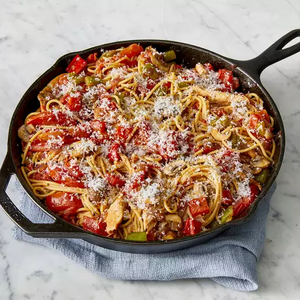

Skillet Chicken Pasta

Description
This chicken pasta skillet meal is a tasteful combination of vegetables, chicken, and pasta prepared in a cast iron skillet. My family eats tons of this stuff.
Ingredients
- ½ (8 ounce) package spaghettini
- 5 tablespoons olive oil, divided
- 8 roma (plum) tomatoes, halved and sliced
- 1 teaspoon garlic powder
- ½ teaspoon dried oregano
- 2 teaspoons dried basil
- 1 pinch salt
Steps
- Whisk onion, soy sauce, brown sugar, garlic, sesame oil, sesame seeds, cayenne pepper, salt, and black pepper together in a bowl until marinade is smooth.
- Cook and stir chicken and marinade together in a large skillet over medium-high heat until chicken is cooked through, about 15 minutes.